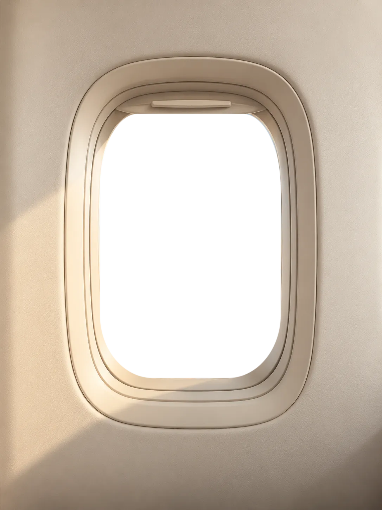
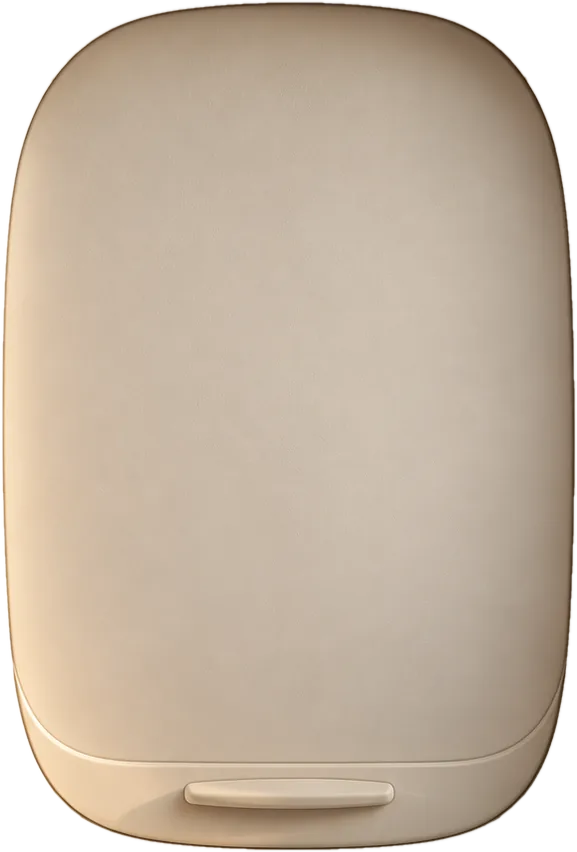
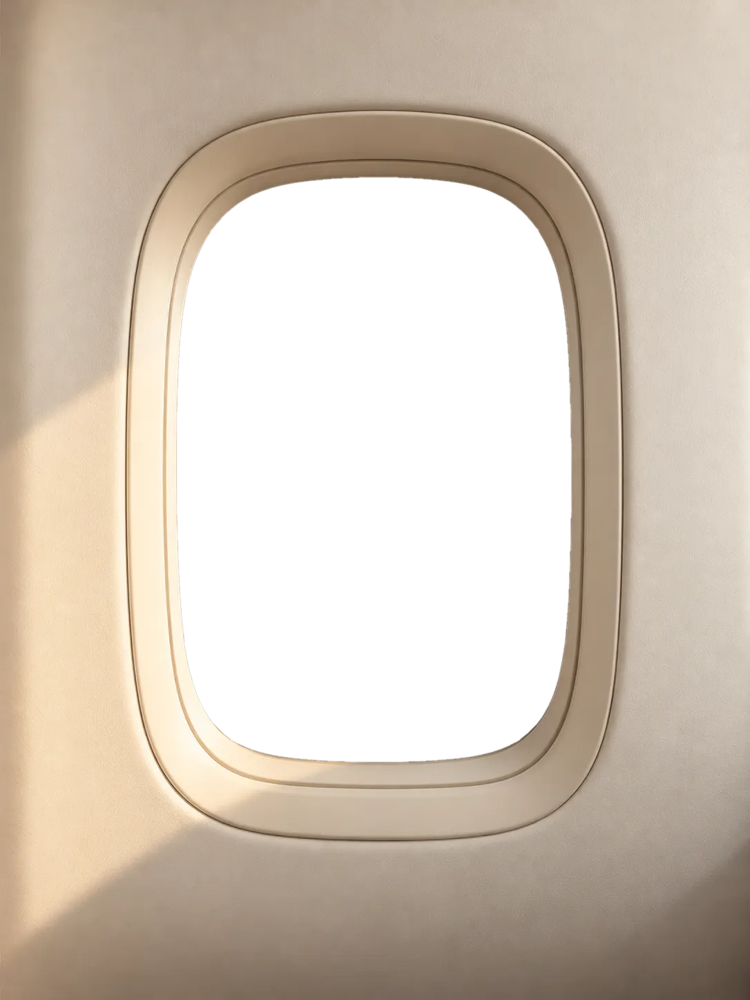
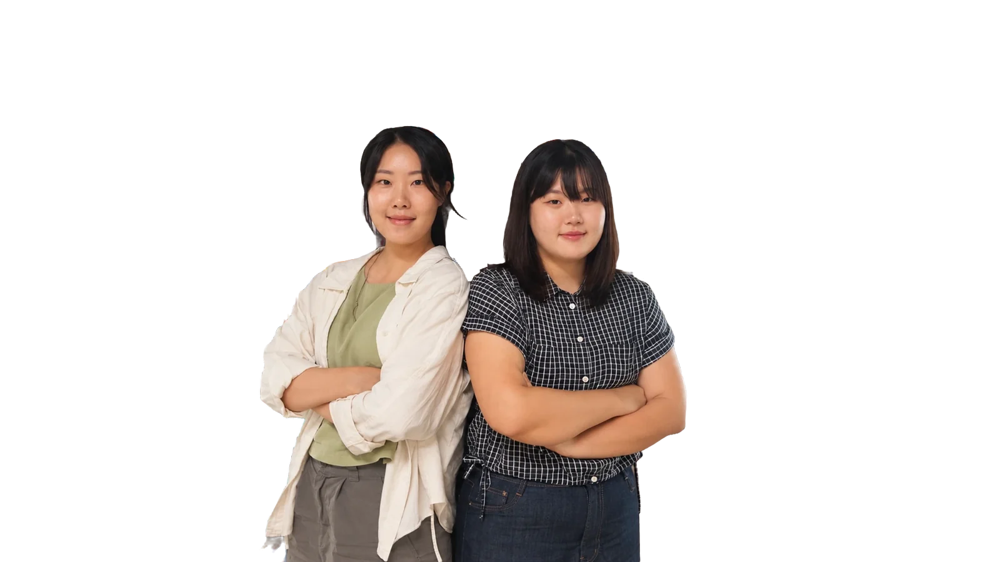
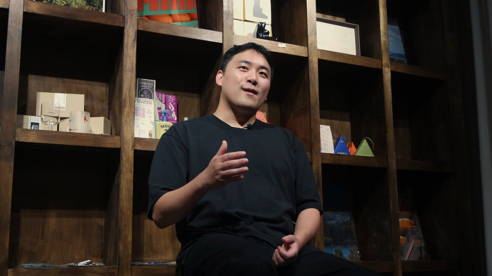
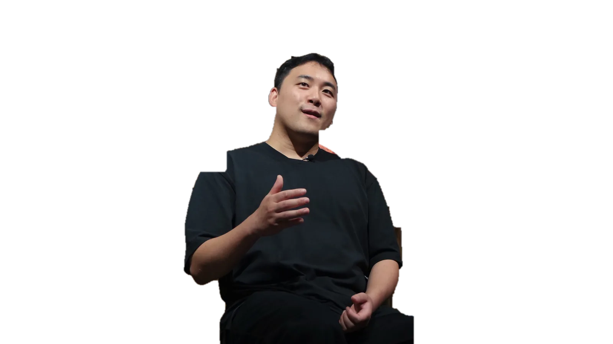

이주민 인터뷰
백록마케팅
인터뷰 01 / 04
백록마케팅: 나만의 속도로 일하며 살아가는 법

도시의 치열한 마케팅 현장을 떠나 제주로 향했습니다.
이제는 제주의 바람을 가르며, 나만의 보폭과 속도로 일과 삶을 채워갑니다.



가리개를 눌러 창을 열어 보세요
스크롤하면 제주로 들어가요
이주민 인터뷰
백록마케팅
인터뷰 01 / 04
도시의 치열한 마케팅 현장을 떠나 제주로 향했습니다.
이제는 제주의 바람을 가르며, 나만의 보폭과 속도로 일과 삶을 채워갑니다.

이주민 인터뷰
아인학교
인터뷰 02 / 04

정형화된 교실을 벗어나 섬의 자연을 교실 삼았습니다.
아이들과 함께 매일 새로운 섬 사람이 되어가는 중입니다.

이주민 인터뷰
파랑오브레코즈샵
인터뷰 03 / 04

바다가 머무는 곳으로 삶의 주파수를 맞췄습니다.
취향을 공간에 담아내며 온전한 제주의 이웃으로 자리 잡았습니다.

이주민 인터뷰
엠아이티도그
인터뷰 04 / 04

제주에서 사람과 반려견이 섬의 숨결에 맞춰 조화롭게 살아가는 법을 가르치고 배웁니다.
인터뷰 읽기VOICES OF JEJU낭만 뒤에 숨겨진, 진짜 제주살이 한 줄엽서를 선택하면 이주민의 제주 추천 스팟과 코멘트를 볼 수 있어요
처음엔 여행자였고, 지금은 이웃이 된 사람들.
— 이제주민 편집팀
그 사이 어딘가의 이야기를 모으고 싶었어요.
02 — JEJU LIFE STORIES
서로 다른 시작, 하나의 제주.
서로 다른 이유로 제주에 왔지만,
이곳에서 각자의 방식으로 삶을 만들어가는 사람들.
낯선 섬이 일상이 되기까지,
그들이 경험한 제주에는 어떤 이야기가 담겨 있을까요?
지금부터 이주민들의 진짜 제주살이 이야기를 들려드릴게요.
출처
사진: Wikimedia Commons
(CC BY · CC BY-SA · CC0),
제주관광공사(Visit Jeju),
한국관광공사